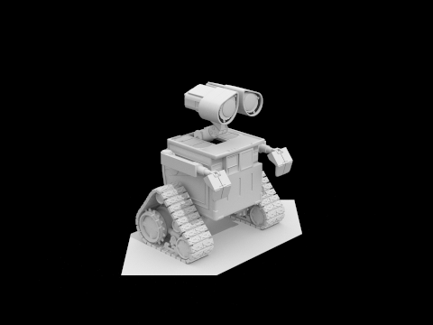
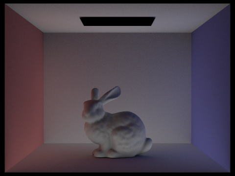

In this project we developed a performant, end-to-end ray tracing system capable of rendering 3D scenes through physical simulation of both direct and global lighting. Additionally, we implemented features ranging from bounding volume hierarchies and adaptive sampling all the way up to fully GPU accelerated rendering in an effort to produce highly detailed renders in a reasonable (and often very short!) amount of time.
Our team worked on this project by creating two separate, complete implementations of the project. We did for two reasons. Firstly, we believe that this helps both of us have a much stronger grasp on the material as a lot of the value of this class comes from the process of implementation itself. Secondly, we found this to be a productive means for debugging as having two parallel versions allowed us to more quickly catch and diagnose bugs by swapping in different components across versions until it worked correctly so as to narrow down the source of the issue.
In this part, we implemented both ray generation and primitive 3D intersection tests for both triangles and spheres. This alone allows us to render small scenes by coloring geometry with an encoded version of its surface normal:
CBspheres.dae (s=1) |
|---|
CBcoil.dae (s=1) |
|---|
To do this, our pipeline begins by casting a variable number of rays (either ns_aa or an adaptive quantity as discussed in part 5) for each pixel. These rays are generated by the camera such that each ray passes through a uniformly random pixel offset through the screen projection plane. The ray then travels out into the world, intersecting with the geometry in the scene.
Our ray tracer supports intersections against both spheres and triangles. We detect sphere intersection by treating the sphere as an implicit surface and solving the quadratic equation for the intersections. To detect triangle intersections, we make use of the Möller Trumbore algorithm. The core of this approach comes from analytically solving for the intersection between a ray and a triangle through a linear system. We do this by first setting the two primitives--namely, the ray and the point of intersection within the triangle (as defined by the barycentrically interpolated position of triangle's vertices)--and then decomposing its constant and unknowns into a M * x = b form, where M is a 3x3 column vector matrix. We are then able to invert M (either analytically or via the statically known 3x3 determinant) to solve for our unknown vector. This provides us with both t (the time of intersection) and two of the three barycentric coordinates (which, naturally, yields the third), which allows us to fully determine the point of intersection. While this is great, we do also need to detect when we have not intersected with the triangle. We don't actually need to any additional computation, however, since we can determine this simply by verifying the results of the system and checking that the solution is valid (i.e. t >= 0 and all barycentric coordinates are in range). If any condition fails, we know that the point of intersection is not valid and thus that there is no such intersection. This allows us to quickly determine if and where a triangle and a ray have an intersection.
To improve ray intersection performance, we implemented a bounding volume hierarchy. This allows us to rapidly rule out large swathes of geometry without needing to test all of it individually. In an ideal case, this can allow a ray which entirely misses the scene to be ruled out by a single intersection test rather than order-n comparisons against each piece of geometry in the scene. In general, however, this allows a well-formed ray intersecting a balanced-ly divided scene to require only order-log(n) comparisons, which is a phenomenal speedup over the previous exhaustive algorithm, especially given that it comes with no additional signal noise as it is entirely deterministic.
Our team constructs the BVH through a recursive algorithm. This algorithm takes in a linked list of geometry nodes and returns a BVH node which, through some series of twists and turns, covers all the referenced geometry. If the linked list contains fewer than the specified max_leaf_size items, a node containing all of the items is directly constructed. If the linked list contains more than max_leaf_size items, we use an "even split" heuristic which attempts to select the axis which has the nearest to even number of items (as determined by their centroid) on the left and right of the split axis' midpoint. If the split has at least one item on each the left and right set (i.e. forward progress is made), the heuristic's split is accepted and the geometry is partitioned. If the split does not have at least one item on each side, the split cannot be accepted as it does not make forward progress and thus would lead to infinite recursion if accepted. To resolve these exceptional cases, we arbitrarily partition the set of items in half by their indices. This prevents infinite recursion and exposes further opportunities for these aimlessly split lists to (hopefully) later be properly divided under the heuristic.
We initially chose the "even split" heuristic based on the intuition that the most even split will lead to the nearest division of bounding box volume, and thus shrink the probability that a random ray will intersect the bounding but miss any actual geometry. This works fairly well and it allowed us to render scenes that were previously impractical to render without BVH:
CBlucy.dae (s=1) |
|---|
CBbunny.dae (s=1) |
|---|
To provide better insight into the performance characteristics of the BVH acceleration structure, we perform a comparative analysis between it and the previous brute-force approach in which every piece of geometry is intersected. All tests were performed on the same processor (Apple M1, 8 threads), the same optimization level (-O3), and the same number of samples per pixel (-s 1).
| Scene | Rendering time (no BVH) | Rendering time (BVH) | Speedup (times) |
|---|---|---|---|
teapot.dae |
1.8041s | 0.0492s | 37x |
cow.dae |
4.4483s | 0.0387s | 115x |
CBbunny.dae |
23.1474s | 0.0460s | 503x |
CBlucy.dae |
117.9038s | 0.0381s | 3095x |
From these results, we can see that BVH is unilaterially better than the bruteforce approach. BVH yields speedups range from 37 times (a number not to be sneezed at!) all the way up to astronomical 3095 times boosts for certain models. While these speedups are wonderful, the great variance in the speed up bears further analysis. While our team did not deeply investigate why some models performed significantly better than others under BVH, we believe this can be explained by the differing geometry of the various scenes. The two models which saw the largest speedups (CBbunny.dae and CBlucy.dae) have a large number of triangles which take up a relatively small area in the scene. This contrasts with some of the lesser speedups seen with others (such as cow.dae) in which the large number of triangles fill a large portion of the rendered scene. We believe this explains the behavior we see since BVH works by attempting to eliminate large swathes of geometry all at once by throwing away branches which do not intersect the ray. This works very well in sparse scenes (like CBlucy.dae) since most rays will miss all but a handful of triangles and thus only perform a handful of BVH traversals. Conversely, this works slightly less well in dense scenes (like cow.dae) where almost all rays intersect with complex geometry and so a fairly deep traversal is required for significantly more rays than in the aforementioned models.
While coloring surfaces based on their normal yields some visually interesting effects, it's not quite what we want most of the time. As such, it's now time to implement some basic, direct illumination!
We did this by first adding support for zero-bounce illumination so that light sources could emit light. With an initial seed of light in the scene, we were then ready to add light bouncing. We did this through two separate means.
First, we implemented hemisphere sampling which, for each camera ray, fired a variable number of light probe rays sampled from a uniform hemisphere on the surface of intersection. Each of these light probe rays returned a light sample which--at this point in the project--ended up just being light from the direct light sources. We then process these samples according to both their angle to the intersected surface and the surface's BSDF to give both correct coloring and scattering for the object. This allowed us to produce some lit (but noisy!) renderings:
CBspheres.dae (H, s=64, l=32) |
|---|
CBbunny.dae (H, s=64, l=32) |
|---|
Next, we implemented light based importance sampling. This required a slightly different approach: rather than sampling randomly over the hemisphere, we sample against each light. Sampling against a light via the sample_L function gave us both a random direction between our intersection point and the underlying probability that the sample we received was the one returned. With this information in hand, we were then able to cast this new probe ray back towards the light to determine if the light is actually visible with the ray we constructed. If the light is not visible (i.e. we are in shadow!), we do not accumulate any light. If the light is visible, we accumulate the light in a similar way as with the uniform sampler except we use our variable sample probability (PDF) instead of our fixed probability as before. This process yields the following results:
CBspheres.dae (s=64, l=32) |
|---|
CBbunny.dae (s=64, l=32) |
|---|
To provide further insight into the behavior of importance sampling, we consider an experiment against the CBbunny.dae scene where we focus on the quality of the soft shadows as we manipulate the number of light rays:
| Light rays | Result (s=1) |
|---|---|
| 1 | |
| 4 | |
| 16 | |
| 64 |
We can immediately make a few key observations. Firstly, in the single light ray example we can see that the shadows are either mostly lit (modulo Lambert's cosine) or fully dark and become more solidly black (in terms of density, not color!) as we move from the edge of the shadow towards the sphere. Both of these are sensible results with one sample because if the random ray is blocked, the pixel ends up being entirely dark. The random ray has a higher probability of being blocked as we move closer to the sphere because there are fewer and fewer paths to the light as the sphere takes up more space from the ray's perspective. As the number of rays increase, the shadow smoothness slowly increase and the issue of "binary shadows" disappear. This, again, is to be expected since with more samples, we have a greater chance of approximating the true number of paths from the light to the points and thus are less susceptible to spurious ray blockage.
Finally, we consider the difference in quality between the hemisphere sampling method and the importance sampling method:
| Hemisphere sampling (s=64, l=32) | Light sampling (s=64, l=32) |
|---|---|
Although both of these renders were taken with relatively high pixel and light ray sample counts, the light sampling render is significantly less noisy. This is most apparent when inspecting the back wall. In the hemisphere sampling render, we see a very non-smooth coloring of the wall. In the light sampled render, the corner shadows on the back wall are very smooth and we have essentially no perceptible sample noise. This difference can be directly explained by the different sampling mechanisms because the hemisphere sampler has a much higher probability of sampling a random dark point rather than any point on the surface of a light, which leads to a larger variety of dark and light results being accumulated. The importance sampler avoids these zero contribution samples (which essentially only add noise) by intentionally constructing the PDF to avoid them, which allows it to over come the noise (or, "converge"!) much faster, leading to much cleaner renders with significantly fewer rays.
In order to implement global illumination, we had to be able to bounce rays off of other surfaces to get indirect lighting. To get the indirect lighting added into the direct lighting, we had to implement at_least_one_bounce_radiance(const Ray &r, const Intersection &isect) (which would add direct and indirect lighting) and add its return value to the return value of zero_bounce_radiance(const Ray &r, const Intersection &isect) (emitted light) within est_radiance_global_illumination(const Ray &r) to get global illumination.
So now the new function to implement is at_least_one_bounce_radiance(). For this, we had to implement ray.depth = max_ray_depth for each ray. If the ray's maximum depth reached 0, we can just return a 0 vector for the illumination, since we will not be doing any bounces of light. Otherwise, we can set the illumination vector (L_out) to the direct illumination of the intersection point (output of one_bounce_radiance()), and try to recursively send rays between objects in the scene. Now, to get indirect illumination (illumination from objects in the scene other than the light sources), we used and implemented DiffuseBSDF::sample_f() to give us a negative sample direction from which the indirect illumination will come from and a corresponding pdf.
We need to make sure that if ray.depth is greater than or equal to 1 and we haven't done any indirect illumination yet, we must take an at least one indirect bounce. Otherwise, we can use Russian Roulette to decide if we should continue with the indirect bounces (continue with probability p = 0.7). We do Russian Roulette because if we did exactly max_ray_depth indirect bounces for each ray, we would get a biased result, and Russian Roulette helps probabilistically balance the ray contributions.
If we continue onto the next indirect bounce (after passing the previous conditions), we must create a new ray in the sample direction with a decremented depth (to cap the number of indirect bounces). We will recursively call at_least_one_bounce_radiance() with the newly created ray and weight it by the cosine of the angle of the ray with respect to the surface normal, with the surface BSDF function, and divide it by the sample's pdf and the Russian Roulette probability (p = 0.7). We can add this value into our L_out and return that. The recursive calls will accumulate all the illuminations from indirect bounces back to our original location in the scene, and that is what we return.
1024 Samples Per Pixel, 16 Light Samples, Max Depth of 5
| | |
| ----------- | ----------- |
| CBspheres_lambertian | CBbunny |
| dragon |  wall-e |
CBbunny.dae:1024 Samples Per Pixel, 16 Light Samples, Max Depth of 5 | | | | ----------- | ----------- | | Direct Illumination Only | Indirect Illumination Only |
CBbunny.dae:1024 Samples Per Pixel, 16 Light Samples
| | |
| ----------- | ----------- |
| CBbunny.dae Max Ray Depth of 0 | CBbunny.dae Max Ray Depth of 1 |
| CBbunny.dae Max Ray Depth of 2 | CBbunny.dae Max Ray Depth of 3 |
| CBbunny.dae Max Ray Depth of 100 |
CBspheres_lambertian.dae:4 Light Samples, Max Depth of 5
| | |
| ----------- | ----------- |
| CBspheres_lambertian.dae 1 Sample Per Pixel | CBspheres_lambertian.dae 2 Sample Per Pixel |
| CBspheres_lambertian.dae 4 Sample Per Pixel | CBspheres_lambertian.dae 8 Sample Per Pixel |
| CBspheres_lambertian.dae 16 Sample Per Pixel | CBspheres_lambertian.dae 64 Sample Per Pixel |
| CBspheres_lambertian.dae 1024 Sample Per Pixel |
We use a statistical calculated quantity I = 1.96 * sqrt(variance / n) to determince convergence of pixels, where n is the number of samples and variance is of the n samples. We stop taking more samples for a pixel if I < maxTolerance * mean, where mean is the average of the n samples. Since calculating these statistics at each step is quite expensive, we calculate it every samplesPerBatch samples for each pixel. However, we need to keep a running sum of each sample's illuminance for calculating the mean (given by illum()), and illuminance squared (for calculating variance). Once our sample number is a multiple of samplesPerBatch, we can calculate the statistics completely and get the mean to be the running sum of illuminance divided by the number of samples done so far (n). We can calculate the variance by this equation: 1/(n-1) * (sum of illuminance - (sum of squares of illuminance)/n). From the mean and variance we can calculate I and compare it to maxTolerance * mean. If it less than the tolerance, we can say we have converged and there is no need to continue taking samples for that pixel, and we can just stop taking samples for that pixel. This will save a lot of computation by preventing us from doing unnecessary calculations that have no discernable impact on the final image.
CBbunny.dae:2048 Samples Per Pixel, 1 Light Sample, Max Depth of 5, 64 Samples Per Batch, Max Tolerance of 0.05
| | |
| ----------- | ----------- |
| CBbunny.dae Adaptive Sampling | CBbunny.dae Adaptive Sampling Rate |
We chose to extend this project in a very fun and intellectually rewarding way by adding experimental support for end-to-end GPU offloading.
While neither of our team members were particularly familiar with GPUs or how to write compute shaders, we felt this extra credit option provided the perfect opportunity to dive in and see what we could do. Since we were working on macOS devices with Apple GPUs, our best (and, I suppose, only!) option was to make use of Apple's Metal graphics API.
After a bit of planning and code base spelunking, however, we found that the existing project structure was not very amenable to GPU acceleration. This is primarily because the existing project code works in a very sequential fashion. That is, a single ray is cast and fully evaluated before being rendered out into a single pixel in the framebuffer. While this works just fine for CPUs, this is very problematic for acceleration with GPUs because GPUs work by performing the same function against an enormous pool of data in parallel.
Working around this issue was quite difficult. Initially, we considered trying to insert operation buffering/deferral (i.e. a ray is generated but rather than being immediately traced, it is pushed to a queue which is evaluated in bulk once a certain number of rays arrived) but we found that this pattern was rather difficult to implement efficiently in C++ as it required storing an enormous amount of state (effectively the entire callstack!) for each ray in order to be able to resume execution once the ray had been traced.
After spinning on this issue for a few days, we eventually decided to throw out all the starter code and start (mostly) fresh. Rather than trying to flatten a single part of the pipeline and parallelize it with the GPU, we decided that we would simply do everything from ray generation to frame buffer writing on the GPU! This was an ambitious goal and, therefore, to manage complexity and avoid turning this extra credit into an even bigger time monster, we chose to limit the scope of our acceleration to only tasks 1 and 2 (i.e. BVH accelerated tracing with normals rather than lighting for coloring).
While it took multiple days and dozens of iterations and re-writes, we eventually reached a working pipeline. Our implementation had three main components which we will now explore in detail.
To support fast tracing on the GPU, we knew we needed to support BVH based tracing on the GPU. Unfortunately, the representation that we used in the CPU based tracer (bvh.cpp) was not suitable for use on the GPU both because it used lots of external pointers (which are not portable across the CPU-GPU gap!) and because it required an enormous amount of the C++ API, making it entirely unusuable in an embedded environment like a shader core.
Thus, to have a functional BVH on the GPU, we chose to construct a brand, flattened BVH structure which we dubbed the "micro-BVH".
This flattened representation was, essentially, the same tree hierarchy and C++ objects as used throughout the CPU variant of the project encoded into a contiguous memory buffer using C structures and buffer offsets. BVH intersection would begin at index zero of the structure and both the left and right bounding boxes would be tested. If an intersection is found for, say, the right child, the index can be taken to find the node or series of triangles and spheres corresponding to that bounding box. This simpler, more compact representation allows both for a much more portable (and thus GPU compatible!) BVH algorithm as well as a much faster traversal since less time is wasted on overhead and pointer chasing.
We provide more detail on how exactly this structure is used in the shader section.
Although we were throwing out most of the project code, we didn't want to do everything from scratch. Thus, we added a new class to the project called GPUTracer which provides a way for the raytrace_renderer to trigger a render using the GPU. This was done so that we can reuse the model parsing functionality as well as a lot of the nice statistics features provided by the project.
In this class, we handle a lot of the Metal boilerplate. Here we create GPU handles, compile shaders, allocate cross-device buffers, issue the correct ray tracing requests, and shuttle data to and from the GPU. This part of the project was not terribly design heavy but it had a fairly steep learning curve as neither of us had used the Metal API, let alone the C++ bindings for that API (the Metal API, as an Apple framework, is actually designed for Objective-C), and so a lot of reading was required to successfully communicate with the GPU.
The final, and ostensibly most exciting, piece of the puzzle is the GPU shader program. Our shader program is designed to be executed once per ray, per pixel. That is, it traces a single ray and super samples that ray into the frame buffer. This is achieved in three main phases.
Firstly, the shader generates a uniformly random ray which passes through the pixel corresponding to the pixel using the same technique used in Camera::generate_ray. We actually didn't initially generate rays as part of our shader program and instead opted to leave ray generation on the CPU. We did this because we thought that ray generation was not terribly expensive and that the convience was worth whatever minimal performance hit we took. This turned out to be seriously wrong for a number of reasons. Most critically, we found that ray generation is actually very time intensive for the CPU and can, in fact, dwarf GPU render time as the ray count reaches into the hundreds of millions. Additionally, storing millions upon millions of rays in memory was problematic for another more practical reason because it is both an enormous waste of space and, as we later discovered, that the Metal API is unable to map buffers larger thatn 4GBs to a GPU. This meant that we not only should be generating rays on the GPU but rather that we needed to generate rays on the GPU if we wanted to support very high sample rates.
Next, with the ray in hand, the shader traverse the BVH tree in a manner very similar to our CPU algorithm. Notably, however, we do not do this recursively both for performance reasons and because Metal does not support recursion for diverge reasons, and so instead opted to use an in-memory operation stack to handle cases where we need to traverse both sides of a node. Intersection tests work almost identically here as they did on the CPU and, in fact, we were able to directly copy and paste most of our algorithms due to matching APIs in Metal and CGL. The tracing process works as expected and eventually yields both a t value and a surface normal.
Once tracing is done, we are able to compute the corresponding pixel color for the surface normal and write it to the frame buffer. Due to the highly parallel nature of GPUs, however, we needed to be careful to make these writes atomic and, due to the Metal API not supporting atomic operations with floating point arguments, we re-encode pixel values as fixed point unsigned integers before writing them out to the frame buffer.
This concludes a single execution of the shader. By executing this procedure against every pixel with a number of iterations, we are able to concurrently cast, trace, and render the result on the GPU!
With this long journey complete, let's now consider the speed up that all this work provided. We do this by comparing the render time between the CPU variant of our project after task 2 against our GPU accelerated variant. All code in this test was compiled on -O3, all CPU tests ran with 8 threads, and all renders target 2048 supersampled rays per pixel. The results are summarized below:
| Model | CPU render time | GPU render time | Speedup |
|---|---|---|---|
CBbunny.dae |
83.4393s | 8.929545s | 9.34x |
CBlucy.dae |
51.4526s | 5.166439s | 9.95x |
cow.dae |
61.5785s | 3.103047s | 19.84x |
CBcoil.dae |
64.1523s | 1.235419s | 51.92x |
As desired, this shows a substantial speedup in the render time for all models. This is not entirely surprising given that this is a task that GPUs are very well suited for given that GPUs work exceedingly well at this task given their enormous number of threads and their much wider floating point pipelines.
We do, however, expect that we could push the GPU much faster with more optimized code and, as we discovered through profiling, a more cache friendly BVH design. We see this most clearly in the huge gap between CBbunny and CBcoil where the smaller and less demanding BVH structure of the coil allowed the GPU to absolutely crush the CPU and render over 50x faster.
Regardless, we are quite satisfied with our first adventure into the art of GPU programming and we hope to apply these skills in our future projects to squeeze out as much extra compute performance as we can.